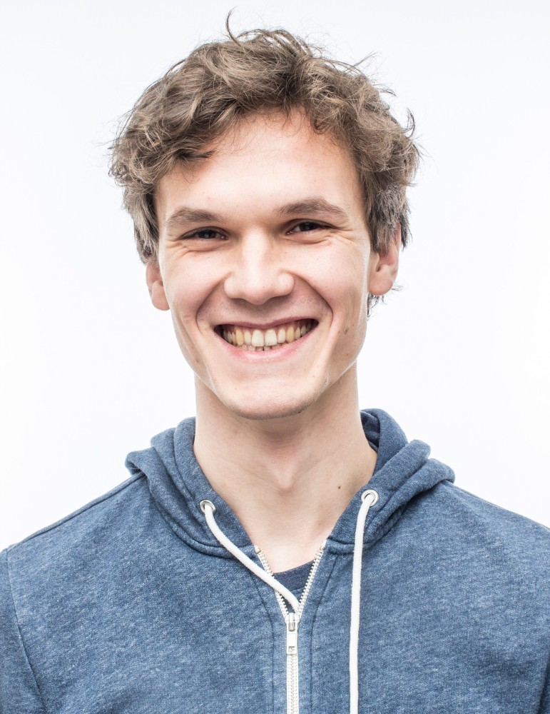
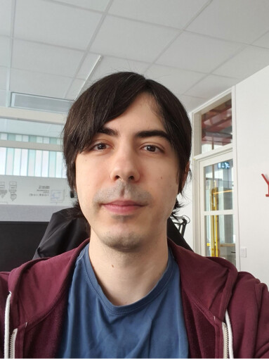
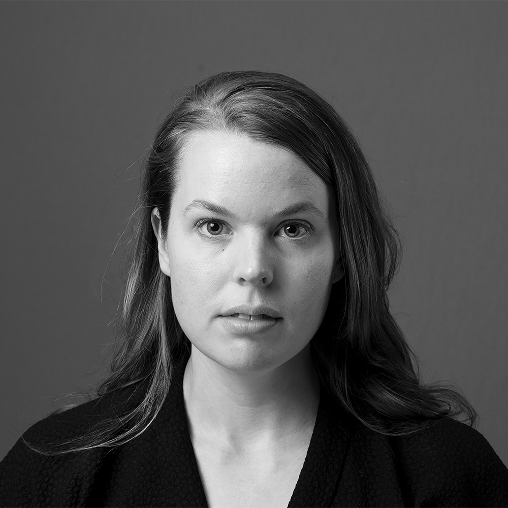

People
Love Börjeson, Director ✉️
I work as a director for KBLab. I’m also a Research Fellow at the Stockholm School of Economics, Center for Educational Leadership and Excellence (CELE). To a large extent, my job involves collocating data, competence, and computational resources.
I have a PhD in Industrial Organization and Economics and I have been a Postdoctoral Fellow and Research Fellow at the Computational Social Science Lab at Stanford University (School of Ed.). Academically/intellectually I would perhaps prefer to label myself as “some kind of sociologist”.
Martin Malmsten, Data scientist and IT architect ✉️
I work as a Data scientist at the lab and as an IT architect for the National Library. In these two roles I mainly focus on corpus creation, large transformer models, infrastructure design and prototyping. Having one foot in tech and data science and one in the library allows me to work strategically with larger questions such as where machine learning can be used to provide new insights into digital collections.
My background is in computer science and software development. Having implemented and worked closely with numerous metadata standards and systems I am a strong supporter of Linked (Open) Data as a paradigm and a way to connect information. My main driver is getting as much information and tools into the hands of as many people as possible.

Robin Kurtz, Data scientist ✉️
As one of the KBLab’s data scientists I work on developing models and datasets that are intended to be used not only internally at the National Library, but also for general use by industry, governmental agencies, and academia. With the recent rise of importance of transformer-based language models, we focus on making use of the library’s vast amounts of text data to train and publish these language models.
I have a strong background in language technology, with degrees in natural language processing (NLP), computational linguistics and computer science. Before starting at the library in October 2020 I received my doctoral degree in computer science (datalogi) from Linköping University, working on semantic dependency parsing, studying algorithms, machine learning methods, and potential applications.

Faton Rekathati, Data scientist ✉️
My first contact with KBLab was as an external researcher. In the spring of 2020 I wrote a masters thesis on the subject of curating news sections in historical newspapers. Over the summer I continued work on the same project as a research assistant for Linköping University, before eventually ending up as a Data scientist with KBLab in September 2020. At KBLab I work with making the library’s collections of visual materials searchable and navigable. In addition to this I also work with training language models and speech recognition models.
My background is in statistics and machine Learning. As a statistician I of course love the programming language R, though nowadays I spend most of my time working with Python.
Chris Haffenden, Research co-ordinator (part-time) ✉️
My position involves helping researchers use the lab’s resources and the library’s digital collections. I assist in dealing with applications for research collaboration, in getting research projects up and running at the lab, and in fixing problems that arise as part of the research process. I also work with communicating and writing articles about the lab’s development projects, as well as running workshops and organizing outreach events to inform the academic community about our tools and resources. I’m always open to new initiatives for collaboration and outreach, so please get in touch!
My academic background is in the field of intellectual and cultural history. I have an MPhil in Political Thought and Intellectual history from Cambridge University, and a PhD in the History of Science and Ideas from Uppsala University. My doctoral thesis, Every Man His Own Monument (2018), examined novel practices of self-monumentalizing in nineteenth-century Britain to present a new argument about the interconnection of celebrity culture and posthumous fame in this period. Apart from working at KBLab, I have also begun work on a new, RJ-financed project that explores the emergence of self-erasure and the longer history of the right to be forgotten. My involvement with KBLab and my research interests are underpinned by a reflexive concern with the ways in which cultural heritage is produced and made use of.
Fredrik Klingwall, Developer/Data curator (part-time) ✉️
I am a developer at the National Library nearing two decades of working with the national Libris systems. Joined the KBLab team part-time in 2019 and would describe myself as a Semantic information modeler thinking about “connectedness” and usefulness of data. RDF is the language of expression and my current role at KBLab is being a helping hand in this field and integration of our metadata infrastructure. Special interest as some may already have surmised is linking entities and identity disambiguation.
My background is sprawling but started somewhere long ago in Computer Science classes at Stockholm University/DSV. Gravitated to musicology and sound engineering for a while but back hands on in the information/knowledge sphere again.
Emma Rende, Product manager (part-time) ✉️
My contribution to the lab is within overall strategy and usability. In my work I try to understand who our users are, what their needs are, and how to reach them in the best possible way. I have driven the process of mapping the lab user journey, which changes continuously as the lab develops. I´ve also had a leading part in identifying the core values for the lab. I only work part-time in the lab, but as a product manager I naturally take the lab’s questions into the various forums I participate in at KB.
I have previously worked within the private sector as a business analyst and business developer in e-commerce. Throughout my career, I have always had a focus on the user experience, but with a commercial insight. I have a master’s degree in Computer and Systems Science from Stockholm University.
Justyna Sikora, Data scientist ✉️
I have always been passionate about languages and linguistics. However, having studied philology and worked in the language industry for couple years, I had a chance to stumble upon many uses of what I, at the time, did not know was NLP. I became fascinated by the possibilities of combining linguistic knowledge with computational methods. This interest has led me into pursuing a Master’s degree in Language Technology at Uppsala University. I graduated in 2022 and started working as a data scientist at KBLab.
Patrik Granholm, Researcher ✉️
I work as a researcher at the KBLab and as curator of the medieval and early modern manuscript collection at the National Library. I am the creator of manuscripta.se, a research infrastructure for the study of medieval and early modern manuscripts preserved in Swedish libraries. My role at the lab is mainly focused on maintaining and developing this infrastructure.
My background is in Classics and I have a PhD in Greek from Uppsala University (2012). My main areas of expertise are textual criticism, manuscript studies, and digital manuscript cataloguing in TEI and IIIF. Since 2012 I have worked in several externally funded projects to catalogue and digitise Greek manuscripts, medieval Old Swedish manuscripts, and post-medieval Old Swedish manuscripts. Currently, I am working, part-time, in two large scale cataloguing and digitisation projects, one involving the medieval Latin theological manuscripts at the National Library, another the West Norse manuscripts at the National Library and Uppsala University Library.

Leonora Vesterbacka Olsson, Senior data scientist ✉️
I work as a senior data scientist at KBLab. I first came into contact with the lab when I used KB-BERT in my previous job as a data scientist at another government agency. Being impressed by the quality and impact of the many large language models trained on swedish data, I applied for a job as soon as there was an opening and voilà! I now lead a project training speech recognition models on the librarys audiovisual archives, using supercomputing facilities provided by the EuroHPC Joint Undertaking. I have a background in particle physics, with research conducted at CERN, and a PhD from ETH Zürich, as well as a postdoc experience at NYU doing research in ML applied to particle physics.
Agnes Toftgård, Data scientist ✉️
I am a data scientist at KBLab, where I work with training Swedish language models (such as our speech-to-text model kb-whisper), and with finding ways to integrate AI in the broader activity at the National Library (such as auto-transcribing radio-archives to make them searchable). My background is a MSE from Linköping University in Data-driven Analysis and Machine Learning, where I found that natural language processing was a perfect mix of my interests in languages and computer science.